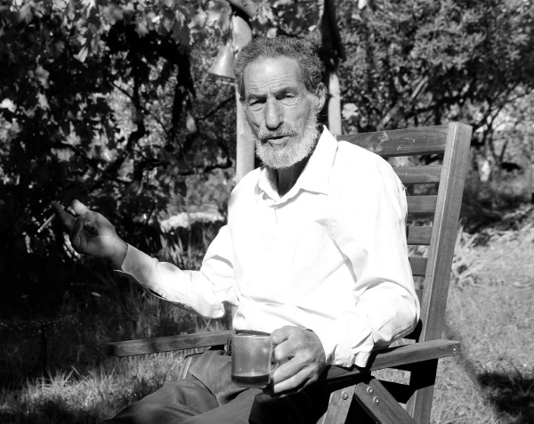

We Have to Lead the Politicians
In an interview with Beis Moshiach Magazine, Shomron Settlers Committee chairman and former Gush Emunim leader Benny Katzover reveals the expected measures designed to take place in the coming months against the diplomatic negotiations. He stated that the politicians will not make their voices heard until the public at-large wakes up and takes part in these activities. He is worried about the policy initiatives, declaring that he is not optimistic. However, he also presents a strategy that can stop the current round of talks: pressure on the prime minister to use the first crisis in negotiations as a means to begin the construction in Area E1 that he had long promised – an initiative that would halt American pressure for years to come.

Last week in Ofra, at the campaign’s first gathering of the right-wing’s political leadership, the deputy minister of transportation, Likud Knesset Member Tzippi Hotovely, declared that if the prime minister continues along his current diplomatic track, he will eventually find himself without a governing coalition and without the support of his own party. Members of the “Joint Task Force” see this as the first sign of results from the massive campaign publicized in the media in recent weeks, calling upon politicians to maintain a watchful eye as they confront what is now being called “the Oslo III Accord.”
The person who has become the face of this struggle is Benny Katzover, former head of the first Shomron Council, one of the founders of the Gush Emunim movement, and current chairman of the Shomron Settlers Committee, one of the dominant organizations leading the struggle over the past three years.
Where are the diplomatic talks holding at the present time, and what exactly are they negotiating behind closed doors?
“Essentially, the main problem is that no one really knows. According to the inside information we have received, they are currently discussing a framework agreement between the two sides on holding talks based on the 1967 borders. As per this agreement, while the Israeli delegation will be allowed to express its objection to a return to the 1967 borders, it will continue to participate in the talks with this principle as its primary foundation. We’re talking about yet another Israeli novelty, an extremely dangerous phase in the prime minister’s ideological downhill slide. He has already accepted the two-state solution, and his only remaining firm position is for the maintenance of the settlement blocs. This means that they are discussing a withdrawal from 90% of Yehuda and Shomron, and the Israeli side has agreed in principle to this step.”
What are the chances that these talks will produce an actual agreement?
“The very fact that there’s an agreement to speak about these borders is extremely dangerous. If, G-d forbid, this framework agreement will be signed, it will represent an acceptance in principle of these borders, and the talks will press forward from there. As a result, we don’t sleep well at night. If a right-of-center prime minister can agree to give away all this territory now, the next time the Americans discuss such matters with the Israelis, the ‘67 borders will be the starting point.
“The government of Israel is essentially saying that it agrees to the 1967 borders, and for the territory that will remain under its sovereignty – i.e., the settlement blocs – it will recompense with land from within the Green Line. This territory will be transferred ch”v to Palestinian control as payment for the settlement blocs. In other words, they have agreed that the land really isn’t ours, and therefore we have to vacate the territory or pay for it with other land.”
There have been other prime ministers who agreed to a return to the 1967 borders, such as Ehud Barak at Camp David, or Mr. Netanyahu’s predecessor, Ehud Olmert. Why do you think that the danger is greater this time?
“Those prime ministers who spoke about the 1967 lines were representing the political left. Now, however, this is the first time that a supposedly right-wing prime minister has agreed to the 1967 borders. If Netanyahu can support this premise, the leftists will surely do so. This will create a situation where the Israeli recognition of the ‘67 borders will become an irrevocable and unalterable fact.
“Israel’s sweeping acceptance of this principle will enable the Palestinians to acquire recognition of their independent state before the United Nations, and the Jewish presence in Yehuda and Shomron will be officially recognized as an occupation. This means that every military operation of the Israel Defense Forces in Sh’chem, for example, will be considered an invasion of the territory of a sovereign country. All Jewish settlements will be subject to possible expulsion, which naturally carries a wide range of potential consequences, including the most severe international sanctions and boycotts.”
The world calls Yehuda and Shomron “occupied territory” even now.
“This naturally intensifies the level of fraud and deceit, and Eretz Yisroel will be unable to deal with the expected international pressures, especially after the whole world officially recognizes these regions as land designated for a Palestinian state. Practically speaking, if a right-wing prime minister can recognize the 1967 borders, it will no longer be possible to claim before the world that these are not occupied territories. They will expect us to move from this land, back within the Green Line. And as for what is commonly called the ‘settlement blocs’, we’ll pay something to keep them, as we acknowledge the fact that they really don’t belong to us.”
Does this mean that they’re actually discussing the establishment of a Palestinian state and a return to the 1967 borders?
“There’s a lot of smoke and mirrors here, as I mentioned previously, and no one really knows what borders they’re talking about. However, one thing is clear: The government has agreed to establish a Palestinian state according to the 1967 borders with certain minor adjustments, although it’s still unclear exactly what those adjustments will be.”
I’M NOT OPTIMISTIC
Your friend – Yesha Council leader Danny Dayan – said last week at the Ofra conference that he is optimistic. This is because they were talking about “a permanent settlement” six months ago, “a temporary settlement” two months ago, and now in recent weeks, they’ve been talking only about “a framework settlement.” He believes that things are working to our benefit.
“Anyone who thought that Kerry would succeed in nine months to bridge the gap on a variety of extremely heavy issues that people have been discussing for years is either very optimistic or very pessimistic, depending on his place on the political map – left or right… Therefore, it was clear from the very outset that there was no possibility of a permanent settlement within nine months. Now, when the Americans realize that there’s no chance of reaching an understanding on all these issues, they will then try to attain a temporary agreement or a framework settlement. However, I’m not optimistic at all because every agreement in principle by the Israeli side for more concessions to the Palestinians will bring another withdrawal and continue the path of terror. This is what happened at Oslo and afterwards with the Gaza disengagement. All such initiatives have merely brought us more pressure and established the perception that we are occupying Arab land – and that we have no legitimate right to Yehuda and Shomron.
“Even if the talks fail this time, they’ll be renewed in another year or two – with more American pressure – and it stands to reason that the prime minister then will be someone even weaker than Netanyahu. In this aspect, there is a serious risk in recognizing the 1967 borders because all future negotiations will begin from the point where these talks end. As a result, I am not optimistic; I disagree with Danny Dayan here. Even if they’re not talking about expelling Jews at the moment, the continuing discussions are extremely dangerous.”
Do you perceive a situation where the Americans could manage to create an understanding between the two sides and achieve an agreement?
“Over the last six months, an eighteen-man American delegation has been in Eretz Yisroel. They are constantly on the job, meeting with high-ranking military officials – both those serving now in the IDF and retired generals – as they use all their powers of persuasion in getting these professional soldiers to issue statements of support for this diplomatic initiative. They are seeking to forge an agreement on a withdrawal from the Jordan Valley and create greater Israeli submissiveness, thereby enabling the government to move the process forward towards more territorial concessions.
“The very fact that the United States is conducting back-door meetings with Israeli army officials is positively scandalous. However, this merely teaches us about the tremendous efforts they are investing in this initiative.”
The defense minister, Mr. Yaalon, claims that Secretary of State Kerry is acting with “messianic fervor” on the issue of the negotiations. How do you explain his constant pressure to reach an agreement with the Palestinians?
“Since the whole world is against us, the Americans seek to earn more brownie points on the international front – and what can do that better than folding up the Jewish homeland and striking an agreement favoring the Palestinians? From their vantage point, the greatest achievement will be ‘to bring peace’ between us and the Palestinians. When you consider the state of the Obama Administration, it’s no wonder that the U.S. State Department is working so fervently to reach an agreement. America’s lame-duck chief executive is perceived today as being very weak, as demonstrated by his tragic policy mistakes in Egypt and Syria. Therefore, he is now looking to make a big success in the Middle East and improve his public image with the American people – at our expense, of course.
“Even the Israeli left now understands that there is no chance to attain peace with the Palestinians, and Justice Minister Tzippi Livni claims that she is striving for an agreement merely in order to ‘part’ with the Palestinians. Thus, the desire for a peace treaty is not realistic today, and everyone realizes this. John Kerry operates based on his own considerations, despite the fact that he knows that there is no hope of a breakthrough in the pursuit of peace between Arabs and Jews. Furthermore, he is not motivated by his love for the Jewish People.”
What do you mean?
“John Kerry is an anti-Semite who acts based on his hatred of Jews.”
THE JORDAN VALLEY IS THE ONLY THE BEGINNING
You persistently speak about how the talks are now on a return to the 1967 borders. However, according to media reports, they are primarily discussing the Jordan Valley.
“Even on this issue, the Americans have outmaneuvered the government of Israel, for if the Israeli negotiators will agree to relinquish the Jordan Valley – an area considered across the political spectrum as vital to the nation’s security – the rest will naturally fall like a ripe plum. Thus, the Jordan Valley has become the major front for this entire issue, as even the Labor Party had previously declared that there must be no concessions on the Jordan Valley. Since it contains virtually no Arab population, if an agreement could be reached on concessions in this vital region, it would be impossible to maintain a firm stance on Yehuda and Shomron, home to two million Arabs.”
Are you concerned by the demographic issue?
“I consider it absurd that those who have done everything possible to harm the Jewish character of the Jewish state suddenly claim that they have to separate themselves from the Palestinians in order to preserve the Jewish homeland. Generally speaking, no one would sell his country based on such claims. You don’t save one set of values by abandoning another.”
How can we take action against diplomatic negotiations when we haven’t the slightest idea what they’re talking about?
“I think that [Defense Minister] Bogey Yaalon’s declarations represent one of the most urgent warnings we could possibly expect. If he chose to speak in this manner, despite his reliable position of authority, he obviously knows things that we don’t know. It also seems that he sees Netanyahu displaying signs of cracking, and therefore, he issued these declarations as a way of trying to stop the decline. His statements have proven that we are in a very difficult situation.”
Do you think the public is starting to wake up to the danger?
“There is no doubt that it’s difficult to conduct this struggle when we lack information on the scope of territorial concessions they are discussing. If the public would know what they were talking about, we could get them out into the streets and perhaps put a halt to this process.
“At this stage, we are focusing primarily on a campaign to arouse greater awareness of the conduct of these talks with whatever information we have acquired. We are also galvanizing a core group of supporters who will initiate activities throughout the country, as they prepare for an intense public relations struggle on a variety of fronts. A couple of weeks ago, we started sending activists out to public intersections on Fridays to hold protests. Naturally, as soon as we know the nature of the agreement in these talks, we will immediately be able to organize our protest activities.
“The next stage in this struggle will be the huge event planned for another two weeks, apparently around Purim Katan. We are preparing for a massive rally of tens of thousands of people, who will then march together to Ma’ale Adumim. The chosen location is well within the national consensus with considerable support among most Knesset Members, and this will maximize the number of parliamentarians attending this event.
“We will remind the prime minister that he had promised to build in Area E1, where Ma’ale Adumim is located, although he has yet to do so. We will establish a PR offensive, instead of constantly emphasizing defensive activities to prevent future capitulations on the diplomatic front.
“We are now preparing for as many as twenty thousand people to come to this event. This will give the nation’s parliamentary representatives the strength to begin speaking in a far different tone of voice within the political system.”
THE PUBLIC MUST AROUSE ITS LEADERS TO TAKE ACTION
Is it possible to stop these talks?
“We are presently applying heavy pressure upon the prime minister. The objective is that at the first opportunity of a crisis in the talks – and there will be a crisis – he should respond by authorizing Jewish construction in Area E1. Such a step will put the negotiations on hold for a lengthy period of time, thereby enabling a breakthrough on building in the settlement regions and the establishment of clear territorial boundaries that will include all of Yehuda and Shomron.”
Are you disappointed with Naftali Bennett, who keeps stammering on foreign policy issues, as he only speaks about his “opposition to the 1967 borders?”
“I don’t deal with giving marks to the country’s politicians. In order for them to take proper action – both the Bayit Yehudi Party and the nationalist wing of the Likud Party – we must apply more public pressure or they’ll simply sit on the fence and do nothing to stop the process. We must create the necessary conditions for them to do the most they can on the political front. Regrettably, the situation today requires that we lead the politicians – not the other way around. If the general public remains apathetic, the politicians will follow suit and they will be unwilling to risk their standing. Today, the grassroots organizers hold the key, and if they are aroused to action, the politicians will be compelled to answer the call. If tens of thousands of people attend the parade scheduled for Ma’ale Adumim, the MKs will begin to question the prime minister’s policies.”
What can the average citizen reading this interview do to take action against this growing risk?
“To stop this process, we must encourage the public to respond positively to the call for participation in the Joint Task Force’s activities, which will be publicized soon. Whether at the scheduled rally for tens of thousands of participants, at intersections, or at any other protest activity, the general public will be asked to take part. On these occasions, we will convey a message directed to the nation’s politicians, giving them an opportunity to begin voicing their own objections to these talks. This will include a Jewish educational message that Eretz Yisroel is not on the trading block, and the land belongs entirely to us.
“With G-d’s help, together with our united strength on a wide-ranged and strategic level, we will succeed in stopping this diplomatic initiative for the sake of the People and the Land of Israel.”
Sholom Ber Crombie. "We Have to Lead the Politicians." Beis Moshiach, no. 913 (January 30, 2014).